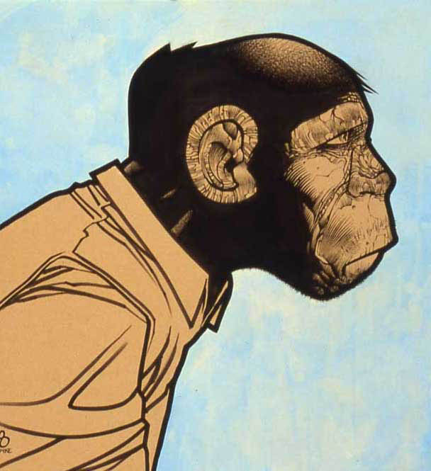

About Me
Who I am.
I'm a Creative Director, Animator, Developer and Design Ninja whose playground is at the intersection of Art and Technology. I have over 16 years of experience in the Broadcast Design field and have worked on everything from branding and launching television networks to developing and deploying full stack web applications.
What I believe.
I believe in honesty above all things. I believe in leading through exaple, and that how we act is who we are. I believe in hard work, celebrating successes, constant innovation, collaboration, lifelong learning, and mentoring others.
What I do.
I lead creative departments, projects, and people. I scrutinize everything for both form and function. I design, animate, and code work that is beautifully simple and can cut through the noise. In my spare time I enjoy taking classes, gaming, sailing, caving, teaching scuba, volunteering, and traveling with my wife. All and all, I do what I love.